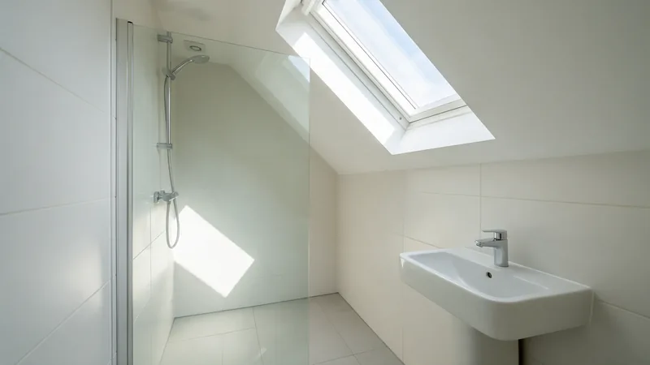
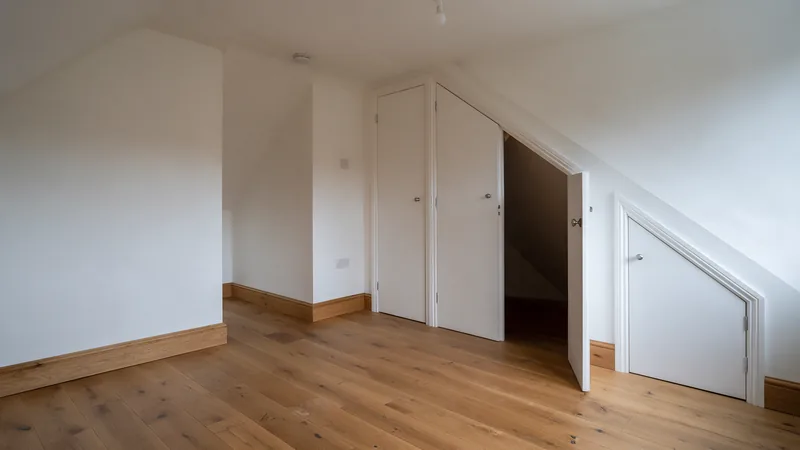

Lay it out around where you stand up
Every loft room has a band up the middle where the ceiling is above your head and a strip at each side where it is not. Get the layout right and nobody ever notices the slopes. Get it wrong and the room feels like a corridor with a bed in it.
The rule is simple: anything you do standing up goes in the high part, and anything you do lying down or sitting goes under the slope. So the shower, the basin and the doorway are in the middle. The bed goes under the slope with the head to the low side. A desk works beautifully under a rooflight in the slope. And the lowest part, where you could not get a chair under it, becomes cupboards.
What the en suite needs
Three things decide whether a shower room can go up there, and all three are about the house rather than the loft. Where the waste can run to, which means getting a soil pipe to the stack at the right fall, and that is the one that most often changes the plan. Whether the water pressure gets up there, which depends on your system and sometimes needs a pump. And whether the floor can be made good enough underneath to take a tray or a wet floor, which is a detail rather than a problem.
Ventilation is the fourth thing and it is not optional. A shower room in a roof with no extractor will grow mould in the first winter, and in a loft the fan has a longer run to get outside, so the duct and the outlet get planned rather than improvised.
Storage is built, not bought
The eaves are the best storage in the house once somebody makes them into something. Deep cupboards with doors that follow the slope, drawers under the lowest part, a run of shelving in a dormer cheek. It is all joinery, all made to fit, and it is why a loft room often needs less furniture than a square bedroom of the same size.
The one thing to keep clear is any access you might need later: a hatch to the remaining loft void if there is one, and a way to get at the junction where the roof meets the wall. Boxing those in permanently is the sort of decision that costs somebody money in fifteen years.

Generated photoGenerated for this demo. Not a photograph of a real job.

Generated photoThe part of the room you cannot stand up in is not wasted. It is where the storage goes, and it is better storage than a wardrobe.
In section
What the pitch does to the room.
Two roofs over the same floor, with the standing line at the same height in both. It is the pitch, not the number at the ridge, that decides how much of the floor is a room.
Same floor · same standing line · shallower pitch
Height at the ridge is not the number that counts
Plenty of lofts measure well at the ridge and still give you a narrow strip of room with a sloping cupboard either side of it. The ceiling falls away from the ridge at the pitch of the roof, so on a shallow roof it runs out of height a short way out from the middle. That is the number that decides what you get, and it is the one nobody measures from the hatch.
Same floor · same standing line · steeper pitch
The same house, and nearly all of it is a room
Steeper pitch, same footprint, and the shaded part runs most of the way out to the eaves. The bit at each side that is too low never goes to waste either: it is where the wardrobes, the drawers and the eaves cupboards go, so the useful floor is wider again than the part you can stand up in.
Drawn in the browser and set out from the pitch rather than sketched. No measurement on either one, because yours depends on your roof and we would rather come and take it.
On the job
How this one usually goes.
- Survey, and the plumbing questionHeight and pitch, where the stairs land, then the three en suite questions: where the waste runs, what the pressure does and where the extractor can vent.
- Drawings with the furniture onDrawings that show the bed, the shower and the cupboards, not just the walls. Where you stand up is drawn, because that is what the layout follows.
- Floor, roof work, watertightNew floor in, any dormer or rooflight work done, the house sealed up again.
- First fixPlumbing to the shower room, waste run, electrics, the extractor duct, and the underfloor heating mat if there is one. All of it before anything is boarded.
- Insulation and lining outInsulation with the air gap above it, plasterboard and skim, and the shower area boarded in a tile backer rather than plasterboard.
- Shower room fitted and tiledTray or wet floor, screen, basin, the tiling, and a flexible sealant bead in every corner that moves rather than grout.
- Joinery, second fix, sign offThe eaves cupboards and the fitted storage, doors, skirting, alarms, decorating and the building control paperwork.
A sample running order for this demo. Yours depends on the house and on what the drawings come back saying.
Questions
Asked about this job.
Will the loft room count as a bedroom when I sell?
It will if it is done properly and signed off, and that is largely what the sign off is for. A conversion with building control approval, a safe stair, a protected route down and the alarms in is a bedroom. A loft with a nice carpet and a ladder is storage with a bed in it, and a surveyor will say so.
This is the single best reason not to let anybody talk you into skipping the paperwork. It is also why we hand over the completion certificate rather than leaving it in a drawer.
Do I have to have a window I could escape from?
There needs to be a way out of the room other than back down a staircase that might be the thing on fire, and on most loft conversions that is an escape window of a size and a position the regulations set out, usually a rooflight low enough in the slope to get through.
It is not a box ticking detail. It is the part of the design that is there in case the worst happens, and it gets agreed with building control at the drawing stage rather than argued about at the end.
Can we have a bath instead of a shower?
Sometimes, and the question is height and weight rather than space. A bath needs headroom over the end you stand at to get in and out, so it wants to be in the high part of the room, and a full bath with somebody in it is a lot of weight in one spot, which the engineer accounts for on the floor.
What usually happens is people ask for a bath and end up pleased with a decent sized shower, because the room gives more back that way. We will draw it both ways.
Where does the shower waste go?
To the existing soil stack, with enough fall all the way to it, and finding the route is part of the first visit. Sometimes it runs in the new floor void, which is tidy and invisible. Sometimes it has to drop through a cupboard in the room below, which is a box in a corner and perfectly liveable once it is painted.
Occasionally there is no route with enough fall, and then it is a pumped waste. They work, they are not silent, and we would rather tell you that at the quote than fit one and let you discover it.
Is a wet room a good idea up there?
It can be excellent, because a wet floor copes with an awkward shape better than a tray does, and in a loft the shape is usually awkward. It needs the floor forming to a fall and waterproofing properly underneath, which is work rather than a product.
The honest warning is that a wet room is a waterproof floor you build on site, and a tray is a waterproof thing you buy. Over a bedroom ceiling, that difference is worth thinking about rather than being talked past.
General trade knowledge written for this demo, not advice on your property.
Our work
Sample jobs like this.
 Generated photoDormer room, finishedMirfield · SampleGenerated photoCupboards in the low bitHolmfirth · Sample
Generated photoDormer room, finishedMirfield · SampleGenerated photoCupboards in the low bitHolmfirth · Sample Generated photoRoof line left aloneSlaithwaite · Sample
Generated photoRoof line left aloneSlaithwaite · SampleMade up samples with generated pictures. Tap one for the detail.
Also
The other things we do.
Dormer loft conversions
A box built out of the back slope, so the ceiling goes flat and the room has a wall you can stand a wardrobe against instead of a slope you keep ducking under.
More →Rooflight conversions
The roof line left exactly as it is, with windows let into the slope. The cheapest way up there when the roof already has the height to spare, and the quickest.
More →Hip to gable conversions
For the semi or the end terrace where the roof slopes in at the side and the loft runs out to a point. The end wall gets built up square and the pointed bit becomes room.
More →Loft boarding and storage
Not a conversion. Boards on raised legs above the insulation so the insulation still works, a hatch you can get through and a light that comes on. The job most people want first.
More →Staircase design for lofts
Where the flight goes, which way it turns and what it takes off the floor below. Decided first, on paper, because everything else in the loft follows it.
More →Shall somebody come up and look?
Tell us the house and your postcode. Half an hour with a tape in the loft and on the landing tells us more than any photograph.